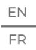
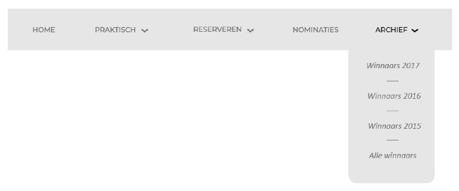

Digital Styleguide
Tekst
Hoofdtitel evenement
Montserrat 50px semibold
Hoofdtitel pagina
PROModern 40px medium
tussentitel
Calibri 35px regular
tekst
Calibri 20px regular interlinie: 22pt
navigatiebalk tekst
Montserrat 18px medium
navigatiebalk tekst meerdere opties
Calibri 20px italic interlinie: 48px
Extra lettertypes/grootes:
Calibri:
regular 35px, 20px, 22px, 30px, 18px, 28px
italic 20px, 16px
Montserrat:
medium 16px, 18px
semibold 50px
Kleur
Blauw
Hex: #62b2da
rgb: (98,178,218)
hsl: (200, 62%, 62%)
Lichtblauw
Hex: #99c8e0
rgb: (153,200,224)
hsl: (200, 53%, 74%)
lichtgrijs
Hex: #f0f0f0
rgb: (240,240,240)
hsl: (0, 0%, 94%)
grijs
Hex: #3d3d3d
rgb: (61,61,61)
hsl: (0, 0%, 24%)
donkergrijs
Hex: #272727
rgb: (39,39,39)
hsl: (0, 0%, 15%)
zwart
Hex: #000000
rgb: (0,0,0)
hsl: (0, 0%, 0%)
rood
Hex: #ff4444
rgb: (255,68,68)
hsl :(0, 100%, 63%)
oranje
Hex: #f2a42e
rgb: (242,164,46)
hsl: (36, 88%, 56%)
Knoppen
formulier versturen knop
VERSTUREN
color: #272727
font-size: 25px
background-color: #62b2da
text-align: center
width: 220px
padding: 12px 27px 12px 27px
social media knop
heeft geen border maar dit is om de groote van de afbeelding die voor de knop staat aan te duiden.
width: 52px
height: 48px
border-radius: 90px
taal knop

height: 60px
width: 46px
font: Montserrat medium 20px
Navigatiebalk

font: Montserrat 18px medium, Calibri 20px italic interlinie: 48px
padding (hoofdnavigatiebalk zonder meerder opties): 38px 56px 38px 56px
padding (meerder opties): 24px 32px 52px 32px
border-radius (meerder opties): 20px
width: 1025px
height: 96px
background-color: #f0f0f0
color: #3d3d3d, #000000, #62b2da